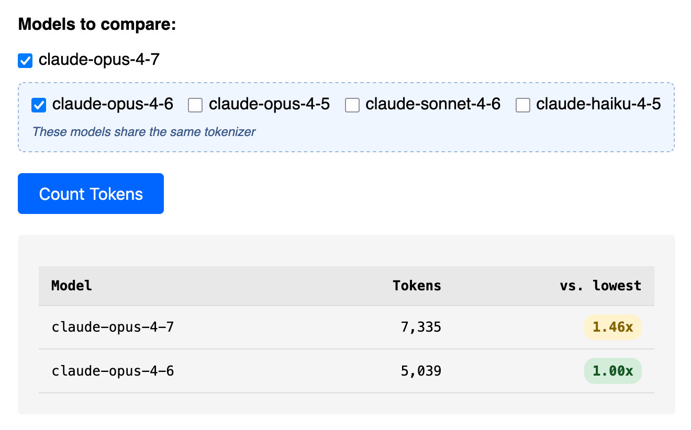

THE FRONT PAGE
EDITOR'S NOTE: As we trade the rigors of structural integrity for the convenience of executive-level abstractions, one wonders if we are still building tools or merely managing the paperwork of our own obsolescence. #The institutionalization of mediocrity through benchmark-driven development.
Blue Origin’s recent flight demonstrates a mastery of the booster return that is now becoming routine, yet the loss of the upper stage serves as a blunt reminder that orbital reliability cannot be averaged out. The trade-off for focusing on the spectacle of reuse is often a lingering fragility in the non-recoverable hardware that actually delivers the payload.
This implementation forces 3.1GB of Gemma 4 weights into the browser to automate Excalidraw diagrams, bypassing the cloud at the cost of a significant initial load. It is a messy, fascinating attempt to reclaim the local machine, though it risks turning the web browser into a heavy-duty OS for which it was never optimized.

Anthropic’s latest update to its token calculator lets users pit Claude 3.5 against older models side by side, exposing the quiet tradeoff between raw capability and spiraling API costs. A rare tool that treats engineers like adults—no handholding, just numbers.
A new lightweight protocol lets developers bypass paid API calls for agent communication, trading centralized control for ad-hoc interoperability. The approach sidesteps vendor lock-in but risks fragmenting standards further—no benchmarks yet on failure rates under load.
MODEL RELEASE HISTORY
No confirmed model releases were detected for this edition date.